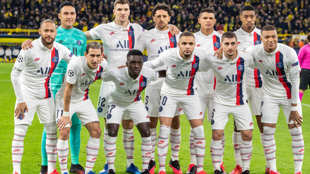

PSG
PSG
PSG
Paris Saint-Germain Football Club – francuski klub piłkarski z siedzibą w Paryżu, rozgrywający mecze na stadionie Parc des Princes. Założony został w 1970 i aktualnie występuje w rozgrywkach Ligue 1. Drużyna należy do najbardziej utytułowanych w swoim kraju, mając na koncie m.in. osiem mistrzostw Francji, dwanaście Pucharów Francji, siedem Superpucharów Francji, osiem Pucharów Ligi Francuskiej oraz Puchar Zdobywców Pucharów i Puchar Intertoto.
Skład PSG
- Bramkarze:
- Keylor Navas
- Sergio Rico
- Marcin Bulka
- Garissone Innocent
- Obrońcy:
- Marquinhos
- Presnel Kimpembe
- Thilo Kehrer
- Abdou Diallo
- Tanguy Kouassi
- Thiago Silva (C)
- Loïc Mbe Soh
- Juan Bernat
- Layvin Kurzawa
- Mitchel Bakker
- Thomas Meunier
- Colin Dagba
- Pomocnicy:
- Idrissa Gueye
- Leandro Paredes
- Marco Verratti
- Julian Draxler
- Ander Herrera
- Adil Aouchiche
- Napastnicy:
- Neymar
- Ángel Di María
- Pablo Sarabia
- Kylian Mbappé
- Mauro Icardi
- Edinson Cavani
- Eric Maxim Choupo-Moting

Osiągniecia klubu
| Rozgrywki | Razy | Sezony |
| Puchar Zdobywców | 1 | 1996 |
| Puchar Intertoto | 1 | 2001 |
| Mistrzostwo Francji | 8 | 1986, 1994, 2013, 2014, 2015, 2016, 2018, 2019 |
| Puchar Francji | 12 | 1982, 1983, 1993, 1995, 1998, 2004, 2006, 2010, 2015, 2016, 2017, 2018 |
| Superpuchar Francji | 9 | 1995, 1998, 2013, 2014, 2015, 2016, 2017, 2018, 2019 |
| Puchar Ligi | 8 | 1995, 1998, 2008, 2014, 2015, 2016, 2017, 2018 |